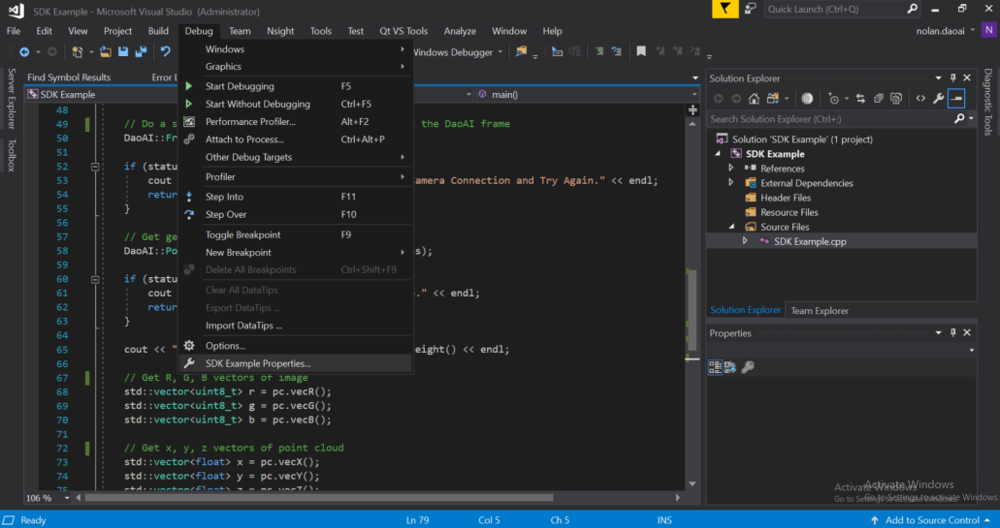
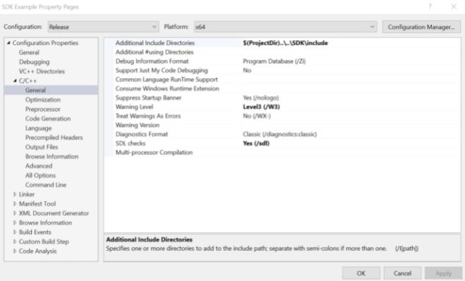
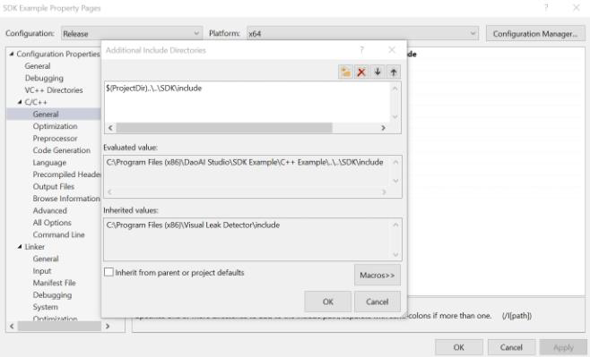
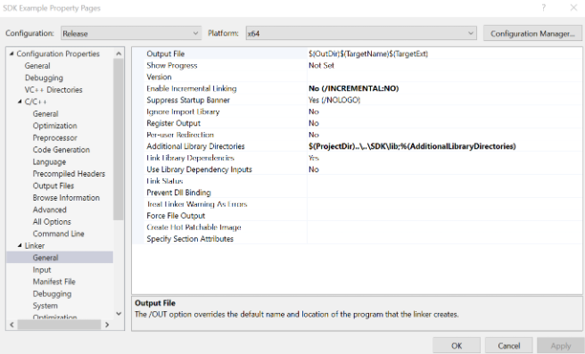
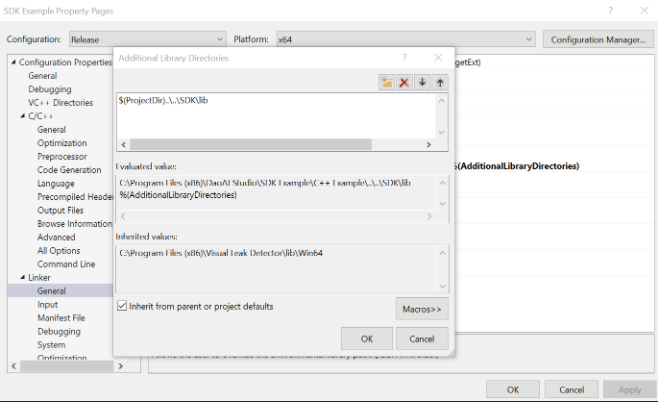
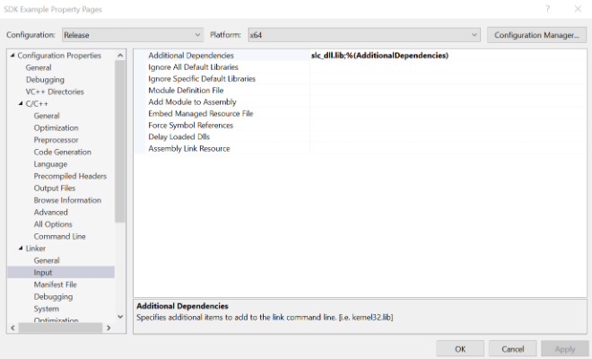
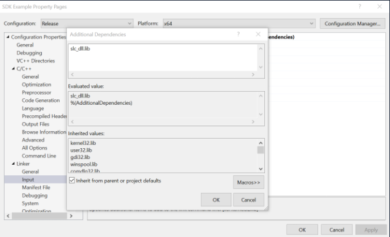

开发 - 创建一个新项目
本页将引导您了解如何使用我们的软件开发包的设置项目。
步骤 1. 将 slc_dll.dll 的路径添加到 Path 系统变量
在 Windows 中，导航到编辑系统环境变量 → 环境变量。 路径系统变量的新条目应该是 <Path to DaoAI Studio>\SDK\bin。
步骤 2. 更新 Visual Studio 中的包含目录
在 Visual Studio 中，导航到调试 → SDK Example Properties。 您还需要留在“属性”菜单中执行其余步骤
更改项目属性时，请确保配置和平台设置正确（发布，x64）。 要更新包含目录，首先导航到 C/C++ → 常规下的附加包含目录，单击字段的下拉箭头并单击编辑，然后添加 SDK 包含目录的路径，其中包含 库头文件。
 步骤 3. 在 Visual Studio 中更新Linker设置
Linker → General 一栏，单击字段的下拉箭头并单击编辑，并将路径添加到 SDK lib 目录，其中包含需要链接的 .lib 库对象文件。
 最后，导航到 Linker → Input，单击字段的下拉箭头并单击编辑，并将 slc_dll.lib 添加为条目。
 完成这些步骤后，应用更改并单击确定。